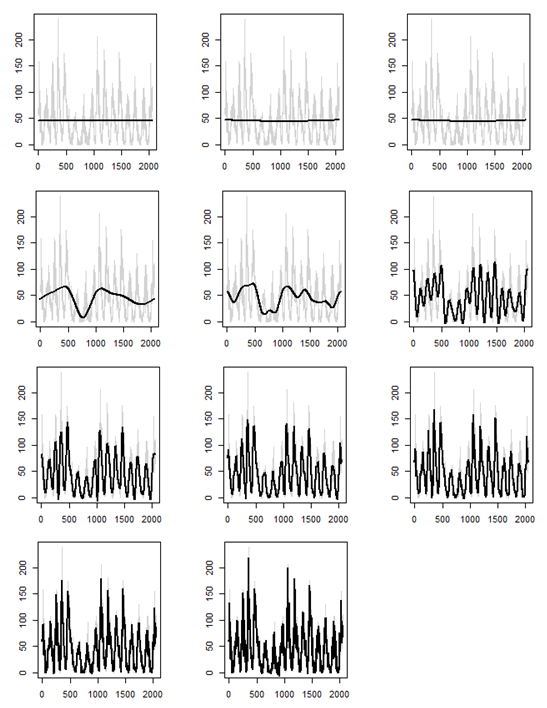

Quantities recorded in an ordered fashion (e.g. over time) compose time series. Daily stock market price, monthly unemployment rate, hourly temperature, and number of new COVID-19 cases per day are a few familiar examples of time series.
There are tons of applications where time series occur. Social scientists may track birth rates and school enrollments over several years. In medicine, weekly blood pressure measurements could be useful for evaluating drugs in treating hypertension. Functional magnetic resonance imaging (fMRI) of brain waves over a few seconds may be used to understand how the brain reacts to certain stimuli. Scientists at NASA use satellites collect daily measurements of weather and pollution globally to study climate. Transportation engineers track numbers and types of vehicles hourly to understand traffic flow patterns. There are many, many more real scenarios where time series occur.
Let's consider a simple example. Suppose you measure a temperature of 90 degrees Fahrenheit in Terre Haute at noon on July 4th. If you took another temperature measurement at the same location, just an hour later, what temperature would you predict? What about 5 hours later? You know that Terre Haute experiences temperatures roughly between 0 degrees and 100 degrees Fahrenheit throughout the year.
It seems nearly impossible that the temperature would randomly fluctuate down to 20 degrees just one hour later, or even five hours later, in the middle of summer. You probably guessed that both temperatures would be close to 90 degrees Fahrenheit. If so, your guess makes use of the fact that the temperature one hour in the future is dependent on the current temperature. Even though five hours is farther away, temporally, the temperatures would still be related. However, if you ignored the dependence and randomly selected from the range of temperatures that Terre Haute sees, you may have arrived at a guess like 20 degrees Fahrenheit.
Because observations that are temporally close may be related, dependence within time series data creates a unique challenge with respect to statistical modeling. For example, when performing statistical inference in simple linear regression, it is common to make the assumption that "errors are independent." Employing a traditional statistical analysis when the data are composed of time series would not properly account for the dependence. This could yield under- or over-estimation of variance and untrustworthy results. Time series methods provide flexibility to describe dependence structures while simultaneously creating a statistical model.
This course covers correlation structures, autoregressive (AR), and moving average (MA) modeling for stationary series.
We also will dive into modeling nonstationary series, spectral analysis, filtering, and forecasting -- all from a statistical perspective.
Real datasets from several different STEM and
non-STEM applications will appear during lectures, in class assignments, and as the main topic of student projects.
Each plot below depicts mean number of sunspots from 1749 to 1983 as the gray time series. We could attempt to filter the series, or estimate an underlying signal, using wavelets. The black curve in each plot represents the filtered series, using a specific discrete wavelet transform, with some of the wavelet coefficients set to 0. In practice, we would select one of the "good" filtered series to estimate the true signal and continue with a statistical analysis.
